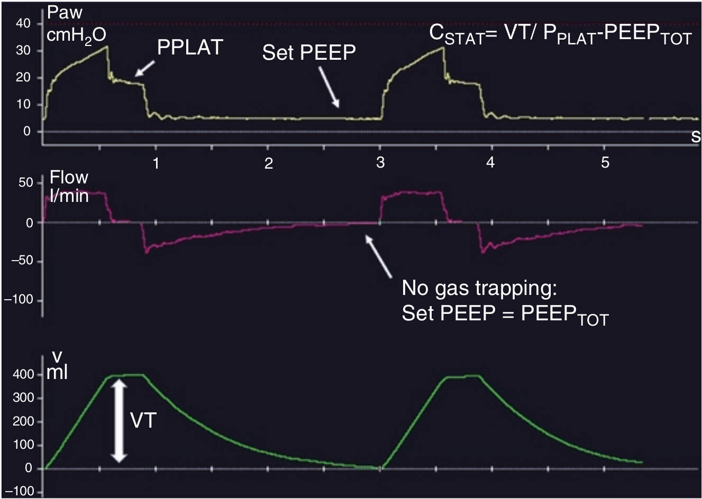

کمپلیانس استاتیک نسبت حجم جاری به فشار رانش می باشد و نشان دهنده قابلیت الاستیکی سیستم تنفسی است. کمپلیانس بصورت نسبت تغییرات حجم به تغییرات فشار (ΔV/ΔP) بین دو نقطه زمانی که در آن شدت جریان در تمام سیستم تنفس صفر است محاسبه میشود (یعنی هنگام مکث دمی).
CSTAT = VT / (PPLAT - PEEPTOT)
کمپلیانس دینامیک عبارت است از تخمین کمپلیانس استاتیک تحت شرایط دینامیک (یعنی هنگام دم فعال بدون وقفه دمی). بنابراین کمپلیانس دینامیک عبارت است از نسبت تغییرات حجم به تغییرات فشار بین دو نقطه در زمان در هنگامیکه شدت جریان در ورودی راه هوائی صفر است (نه در تمام سیستم تنفسی). روش محاسبه آن توسط ونتیلاتور معمولا از طریق گنجاندن تعداد زیادی نقطه داده (فشار، حجم و شدت جریان) در معادله حرکت دستگاه تنفس و سپس بدست آوردن کمپلیانس به عنوان ضرائب رگرسیون چند متغییره. برای مدل تک کمپارتمانی سیستم تنفس کمپلیانس دینامیک و استاتیک با هم برابر هستند و مستقل از تعداد تنفس می باشد. در مدل های چند کمپارتمانی با توجه به اینکه توزیع مقاومت و کمپلیانس یکنواخت نیست، کمپلیانس استاتیک بیشتر از دینامیک است زیرا فی مابین واحد های ریوی جریان گازی برقرار است و این جریان ها سبب افزایش ΔP برای مقدار مشخص ΔV میشود. در اینجا با افزایش تعدا تنفس کمپلیانس دینامیک کاهش می یابد. متاسفانه بعضی از محققین برای محاسبه کمپلیانس دینامیک از فشار حداکثر دمی (PPEAK) بجای فشار پلاتو استفاده میکنند.
CDYN = VT / (PPEAK - PEEPTOT)
ولی از آنجاکه PPEAK خود تابعی از مقاومت و کمپلیانس است بنابراین مقدار بدست آمده از فرمول فوق نمی تواند نشانگر کمپلیانس باشد. این تعریف قدیمی از کمپلیانس دینامیک هم نامربوط است و هم سبب گمراهی میشود.

کمپلیانس استاتیک عبارت است از:
۱ - ΔV/ΔP
۲ - ΔP/ΔV
۳ - احتباس گاز تاثیری بر روی آن ندارد
۴ - در محاسبه آن فشار حداکثر دمی بکار میرود
۵ - با افزایش تعداد تنفس افزایش می یابد.